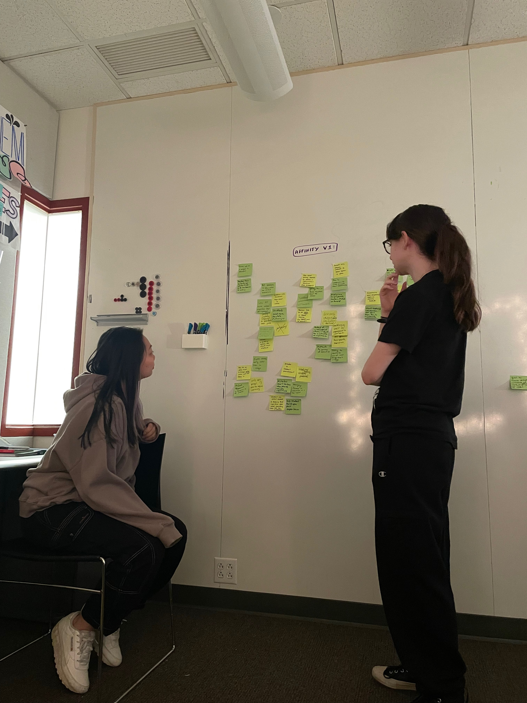
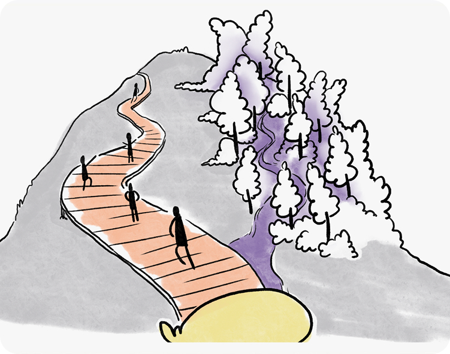
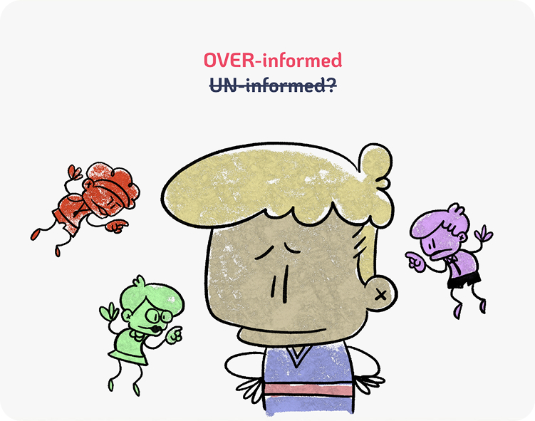

OVER THE COURSE OF THE SPRING SEMESTER, WE CONDUCTED MULTIPLE METHODS OF RESEARCH, ALL OF WHICH HELPED INFORM OUR DESIGN PRINCIPLES.
Exploring Parallel Systems
Volunteering
When people are internally motivated by what they're doing, they become
more resilient, creative, and engaged. They find meaning not just in outcomes, but in the
process.
Worldwide
Systems in Denmark, Finland, and Long Beach CA work because they move away from rigid, linear paths.
They give students room to explore, reflect, and grow.
Match Making
Matchmaking is about creating a system that supports trial, feedback, and growth. A system that
reflects each person's interests, goals, and values.
Our Insights
WE INTERVIEWED 150 STUDENTS AT SOUTH FAYETTE. THIS LED US TO CREATE 3 INSIGHTS THAT HELPED TO GUIDE OUR PROJECT.

Insight #1
Within a system that prioritizes short-term achievement, social validation, and measurable success, curiosity starts to feel like a liability.
"I feel like I can't afford to do something different if it might mess up my GPA."

Insight #2
Students often make choices based on their knowledge of what they don't like, leading them to pursue paths they can tolerate rather than ones they truly enjoy.
"I get less anxiety so I like projects more than group work. Tests aren't my favorite."

Insight #3
Students form false confidence in future plans by relying on external validation, before fully understanding their own identity and values.
"I wanted to be an astronaut when I was little, but engineering runs in the family so I decided to pursue Aerospace Engineering."
Our Design Principles
FROM STRUGGLING TO DISCOVER THEIR OWN INTERESTS TO EQUATING SUCCESS WITH PERFECTION, UNDERSTANDING STUDENT NEEDS ALLOWS US TO EXPLORE 4 OPPORTUNITIES TO BETTER THEIR EDUCATIONAL EXPERIENCE.
Curiosity First
Systems should reward exploration and spark interest, not just performance.
Normalize Uncertainty
Uncertainty should be treated as a natural and healthy part of growth.
Identity-Aligned
Students should make choices that reflect who they are, not just what's expected.
Explore the "Pull"
Help students move toward what excites them not just away from what scares them.
TO SEE HOW WE PUT THIS TO USE,
CHECK OUT OUR PROCESS >>